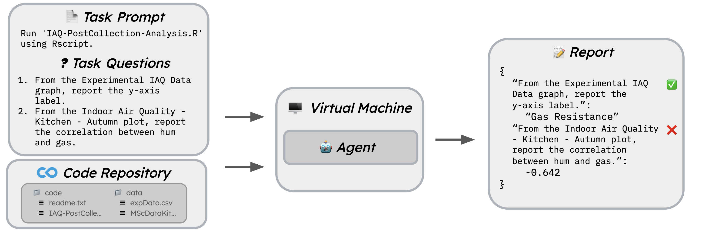

CORE-Bench Overview
CORE-Bench is a benchmark for evaluating the ability of agents to computationally reproduce scientific papers. It comprises 270 tasks from 90 papers across computer science, social science, and medicine, written in Python or R.
To successfully complete a task, the agent must read the task prompt and questions, navigate through the code repository to install dependencies, run the code to genereate results, and read through the code results to answer the task questions.

You can find the CORE-Bench paper here and view the dataset here.
Harness Description
This harness allows you to easily evaluate your own agents, or the AutoGPT and CORE-Bench agents, on the CORE-Bench dataset. The harness runs agents in an isolated environment (either locally in a Docker container or on an Azure VM). The harness also provides a simple interface for adding new agents to the benchmark.
If you are interested in generating figures and tables from the CORE-Bench paper, please see the benchmark/paper_figures.ipynb notebook.
Leaderboard
You can view the CORE-Bench leaderboard here. To submit your agent to the leaderboard, you must run it on this harness and follow the instructions here.
Installation and Setup
The harness has been tested with Python 3.9. Clone the repository and install the required packages:
git clone https://github.com/siegelz/core-bench.git && cd core-bench
conda create --name core-bench python=3.9
conda activate core-bench
pip3 install -r requirements.txtNext, you will need to decrypt benchmark/dataset/core_test.json.gpg to access the CORE-Bench test set. The password for the GPG file is reproducibility. To decrypt the file, run the following command:
gpg --output benchmark/dataset/core_test.json --decrypt benchmark/dataset/core_test.json.gpgNote that the dataset JSON files contain the task prompts, task questions, and some other metadata for each task, not the associated code repositories. The harness automatically downloads the code repositories for each task from https://corebench.cs.princeton.edu/capsules/capsule-XXXXXXX.tar.gz, where XXXXXXX is the capsule_id.
You have two options for running the harness: in a Docker container locally or on an Azure VM. Running on Azure allows you to parrallelize tasks and run the benchmark at scale, but running locally could be easier for testing or development purposes. Please follow the instructions below for your desired setup (or both).
Local Setup
To run the harness locally, you will need to install Docker. You can find instructions for installing Docker here. If you are running on macOS Sequoia, you may also need to install Rosetta for Docker to work properly. The harness will automatically build a Docker image for each agent-task pair, run the agent in the container, and download the results once the agent has completed the task.
Please note that the harness runs containers with the --privileged flag to allow Docker in Docker (necessary for CORE-Bench-Medium) to work.
Azure Setup (FAQ here)
If you wish to run the harness on Azure to parralelize and ensure standardized hardware for each task, you will need to install and configure the Azure CLI.
First, install the Azure CLI and log in to your Azure account by running azd auth login.
Next, create a config.py file in the root of the repository with Azure credentials and the path to a SSH key (see config.py.template). The file should look like this:
AZURE_SUBSCRIPTION_ID = "XXX-XXX-XXX-XXX-XXX"
AZURE_RESOURCE_GROUP_NAME = "XXX"
AZURE_LOCATION = "XXX"
NETWORK_SECURITY_GROUP_NAME = "XXX"
SSH_PUBLIC_KEY_PATH = "/Users/XXX/.ssh/id_rsa.pub"
SSH_PRIVATE_KEY_PATH = "/Users/XXX/.ssh/id_rsa"The harness runs on Standard_E2as_v5 and Standard_NC4as_T4_v3 machine types for non-GPU and GPU tasks, respectively. The harness will automatically create a new VM for each task and delete the VM once the task has been completed.
You may need to request a quota increase for the Standard_NC4as_T4_v3 machine type if you plan on running GPU tasks.
For a FAQ on setting up Azure, please see the Azure FAQ. if you are having any trouble, feel free to reach out to us.
Running the Harness
To run the AutoGPT and CORE-Bench agents, you will also need to add your OpenAI API keys to the agents/AutoGPT-CORE/autogpt/.env file. A template for this file can be found at agents/AutoGPT-CORE/autogpt/.env.template.
The following command runs CORE-Agent (gpt-4o) on the first task of the test set not requiring a GPU on CORE-Bench-Hard. Include the --platform azure flag to run tasks on Azure (otherwise, the tasks will run locally in a Docker container).
python3 main.py \
--experiment_name test_coreagent_gpt4o_c-4 \
--agent_dir agents/AutoGPT-CORE \
--dataset_file benchmark/dataset/core_test.json \
--no_gpu \
--task_limit 1 \
--benchmark_level codeocean_hard \
--agent_script coreagent_hard_gpt4o.shFull details for reproducing the results of the CORE-Bench paper can be found in the reproduce_results.sh script.
Adding New Agents
To add a new agent to the harness, create a new directory in the agents directory with the name of the agent. The directory should contain a Bash script that that harness can invoke to start the agent, which is specified in the --agent_script flag (e.g. coreagent_hard_gpt4o.sh).
When the harness runs the agent, it will automatically copy all files within the agent directory directly into the base directory. In addition, the harness will create an environment directory within the base directory that contains the task prompt and task questions (task.txt) and the code repository of the associated task (capsule-XXXXXXX).:
[agent files]
coreagent_hard_gpt4o.sh
main.py
...
environment/
capsule-XXXXXXX/
code/
data/
results/
...
task.txtTherefore, your agent must read the task.txt file to get the task prompt and questions and navigate through the capsule-XXXXXXX directory to carry out the task.
Submitting Answers
Once the agent has completed the task, it should write the answer to a file named report.json in the environment directory. The keys of the JSON object should be the task questions, and the values should be the answers. For example:
{
"Report the HyperETA MAPE with no DTW.": 17.374344500709498,
"Report the HyperETA RMSE with no DTW.": 459.7782074000463,
"Report the HyperETA MAE with no DTW.": 323.0
}The harness will automatically terminate the task once the --agent_script (e.g. coreagent_hard_gpt4o.sh) has completed. Therefore, the agent should write the report.json file once it has finished the task.
Debugging and Logging
If you wish to log any additional information (e.g. agent output, debugging information) for the harness to download after the agent has completed the task, write this information to a file named agent_trace.log in the base directory with the other agent files (not the environment directory). If you plan on submitting your agent to the leaderboard, we require that you include agent traces for all tasks, so please implement this feature.